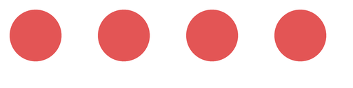
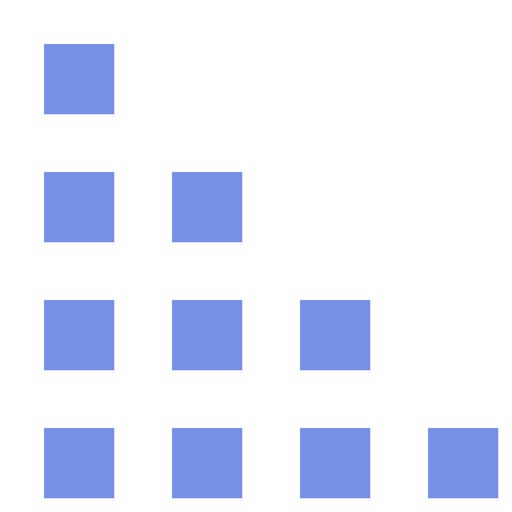

Lecture 7. Conditions, choices and loops.
Programming Languages Lab · University of Pisa
Vincenzo Ciancia, CNR-ISTI
vincenzo.ciancia@isti.cnr.it · github.com/vincenzoml/PLDW
Lecture 6, exercises 2 and 3
declare: "var" IDENTIFIER
@dataclass(frozen=True)
class Unset:
"""What a variable declared without a value holds."""
UNSET = Unset()
case Var(name):
match lookup(env, name):
case Loc() as loc:
value = access(state, loc)
if value is UNSET:
raise ValueError(f"{name} has no value yet")
return value
var x allocates a location that holds UNSET, a value no expression can produce.
Reading it before the first assignment is an error: var x; print x + 1 gives x has no value yet.
Declaring a name that is already a variable is an error. So is var x = 1; print let x = 5 in x; var x = 2: when the last command runs, the let is over and x is the variable again.
case Alias(name, target):
loc = lookup(env, target)
if not isinstance(loc, Loc):
raise ValueError(f"{target} is not a variable")
return bind(env, name, loc), state
alias y = x changes only the environment: y is bound to the location of x. The store is untouched.
var x = 0; alias y = x;
x <- x + 1; y <- y + 1; ℓ0 holds 2
var z = y; ℓ1 holds 2
x <- x + 1; ℓ0 holds 3
print y + z 5
In Python: a = [0]; b = a; b[0] = 7; print(a) prints [7]. Two names, one list.
Control flow
Python
n = 5
f = 1
while n > 1:
f = f * n
n = n - 1
print(f) # 120
Our language, today
var n = 5;
var f = 1;
while n > 1 do {
f <- f * n;
n <- n - 1
};
print f # 120
In Lecture 6 every command was executed once, in the order it is written. To compute 10! we would have to write the two assignments ten times.
CONDITIONS
true, false, and comparisons that give one of them: n > 1.
CHOICE
if e then c₁ else c₂: execute one command of two.
REPETITION
while e do c: execute a command as long as a condition holds.
And one more: { c₁; c₂ }, a block, to put several commands where one is expected.
The code of this lecture is in code/lesson-07/: control.py. It starts from state.py of Lecture 6.
Conditions
print 3 < 4;
print 2 + 2 == 5;
print true == false
true
false
false
| syntax | value |
|---|---|
true, false | the two booleans |
e₁ < e₂, <=, >, >= | compare two integers |
e₁ == e₂, != | compare two values of the same kind |
An expression can now give an integer or a boolean. A variable can hold either.
?expr: let | ifexpr | test
?test: arith | compare
compare: arith CMP arith
?arith: bin | mono
bin: arith OP mono
mono: ground | boolean | var | paren
boolean: BOOLEAN
BOOLEAN: "true" | "false"
CMP: "==" | "!=" | "<=" | ">=" | "<" | ">"
A comparison is a level above arithmetic: in x + 1 < y * 2 both sides are computed first.
A comparison has two arithmetic sides, so 1 < 2 < 3 is a syntax error.
true and false become reserved words, like if, then, else, while and do.
Python reads 1 < 2 < 3 as 1 < 2 and 2 < 3. C computes 1 < 2, which is 1, then 1 < 3.
def less(x: EVal, y: EVal) -> EVal:
return integer(x) < integer(y)
def equal(x: EVal, y: EVal) -> EVal:
if type(x) is not type(y):
raise ValueError(
f"Cannot compare {show(x)} and {show(y)}")
return x == y
def create_initial_env() -> Environment:
env = empty_environment()
env = bind(env, "+", add)
...
env = bind(env, "<", less)
env = bind(env, "==", equal)
...
A comparison is a BinaryExpression, like x + 1. Its operator is looked up by name in the environment, as in Lecture 4.
The case of BinaryExpression in evaluate does not change. Six new names in the initial environment are enough.
True is 1
type EVal = int | bool
def integer(value: EVal) -> int:
# bool is a subclass of int in Python
if type(value) is not int:
raise ValueError(
f"{show(value)} is not a number")
return value
def add(x: EVal, y: EVal) -> EVal:
return integer(x) + integer(y)
In Python True + 1 is 2, and 1 == True is True. We decide that in our language they are errors.
So every arithmetic operator checks its operands with integer, which uses type(...) is int: isinstance(True, int) is True.
print true + 1 true is not a number
print 1 == true Cannot compare 1 and true
show prints the booleans as the language writes them: true, not True.
Choice
if and blocks
var x = 7;
if x % 2 == 0 then print 0 else print 1;
if x > 5 then {
print x;
x <- 5
} else print 0;
print x
1
7
5
| command | meaning |
|---|---|
if e then c₁ else c₂ | c₁ if e is true, c₂ if it is false |
while e do c | c, again and again, as long as e is true |
{ c₁; c₂; ... } | the commands inside, in order |
Each branch, and the body of while, is one command. For more than one, a block.
sequence: command | command ";" sequence
?command: vardecl | assign | print
| if | while | block
if: "if" expr "then" command "else" command
while: "while" expr "do" command
block: "{" sequence "}"
Three new commands. Inside braces there is a sequence, the same rule as a whole program.
A block is a command, so it can be a branch, a body, or another block's command.
In while n > 1 do n <- n - 1; print n the body is only the assignment: print n comes after the loop.
Every if has an else. Without that rule, if a then if b then c₁ else c₂ would have two parse trees: which if does the else belong to?
@dataclass(frozen=True)
class If:
test: Expression
then_branch: Command
else_branch: Command
@dataclass(frozen=True)
class While:
test: Expression
body: Command
@dataclass(frozen=True)
class Block:
body: Sequence
type Command = (VarDecl | Assign | Print
| If | While | Block)
For the first time, a command contains other commands. Command is now a recursive type, like Expression.
The transformation of the parse tree calls itself on the branches, as transform_expression does on the operands.
While(test=BinaryExpression(op='>', left=Var(name='n'), right=Number(value=0)),
body=Assign(name='n', expr=BinaryExpression(op='-', left=Var(name='n'), right=Number(value=1))))
def condition(test: Expression, env: Environment,
state: State) -> bool:
value = evaluate(test, env, state)
if type(value) is not bool:
raise ValueError(
f"The condition is {show(value)}, "
"not true or false")
return value
The condition of if and while is an expression. If its value is not a boolean, it is an error.
if 1 then print 1 else print 2
The condition is 1, not true or false
In Python and C, if 0: and if (0) are allowed: 0, the empty list and None count as false. We keep the two kinds of value apart.
if
case If(test, then_branch, else_branch):
if condition(test, env, state):
_, state = execute(then_branch, env, state)
else:
_, state = execute(else_branch, env, state)
return env, state
Compute the condition, then execute one branch. The other one is never looked at.
The state goes on to the next command: what the branch assigned stays assigned.
The environment returned by the branch is thrown away, _. The next command gets the environment the if received.
var x = 1;
if x > 0 then var y = 1 else print 0;
print y
Undefined identifier: y
If the environment of the branch went on, y would exist after the if only when x > 0.
Whether print y is correct would depend on the run, not on the text. The scope of a name would no longer be static.
So a declaration in a branch is visible only in that branch.
case Block(body):
_, state = execute_sequence(body, env, state)
return env, state
var x = 1;
{ var x = 2; print x };
print x
2
1
The same rule: the commands inside see each other's declarations, and nothing declared inside is seen after the closing brace.
The inner x is a new location, \( \ell_1 \). After the block no name reaches it, as with a second var x in Lecture 6.
Assignments are not undone: var a = 1; { a <- 2 }; print a prints 2. A block limits names, not changes to the store.
\( ⟦\mathtt{if}\ e\ \mathtt{then}\ c_1\ \mathtt{else}\ c_2⟧(\rho, \sigma) = \begin{cases} (\rho, \sigma_1) & \text{if } ⟦e⟧(\rho, \sigma) = \mathit{true} \text{ and } ⟦c_1⟧(\rho, \sigma) = (\rho_1, \sigma_1) \\ (\rho, \sigma_2) & \text{if } ⟦e⟧(\rho, \sigma) = \mathit{false} \text{ and } ⟦c_2⟧(\rho, \sigma) = (\rho_2, \sigma_2) \end{cases} \)
\( ⟦\{\ s\ \}⟧(\rho, \sigma) = (\rho, \sigma') \quad \text{where } ⟦s⟧(\rho, \sigma) = (\rho', \sigma') \)
if in an expression
var x = 0;
print if x != 0 then 10 / x else 0
0
ifexpr: "if" expr "then" expr "else" expr
case IfExpr(test, then_branch, else_branch):
if condition(test, env, state):
return evaluate(then_branch, env, state)
return evaluate(else_branch, env, state)
The same choice, between two expressions: its value is the value of one branch.
The parser knows which if it is from where it is: after print an expression is expected, at the start of a command a command.
Like let, it is at the level of expr: the else branch goes as far as possible. To use it as an operand, parentheses: 1 + (if b then 1 else 2). Python writes it a if b else c, C b ? a : c.
if is not an operator
def choose(test, a, b):
return a if test else b
env = bind(env, "if", choose) # ?
An operator receives values: evaluate computes both operands before calling it.
With if as an operator, if x != 0 then 10 / x else 0 would compute 10 / x first, and fail with Division by zero when x is 0.
So if needs its own case in evaluate, which computes the condition, and then one branch only.
The same holds for and and or: exercise 2.
Repetition
whilewhile\( ⟦w⟧(\rho, \sigma) = \begin{cases} ⟦w⟧(\rho, \sigma') & \text{if } ⟦e⟧(\rho, \sigma) = \mathit{true} \text{ and } ⟦c⟧(\rho, \sigma) = (\rho', \sigma') \\ (\rho, \sigma) & \text{if } ⟦e⟧(\rho, \sigma) = \mathit{false} \end{cases} \qquad w = \mathtt{while}\ e\ \mathtt{do}\ c \)
In the theory lectures, this is why the meaning of while in IMP is a fixed point.
def execute_while(test: Expression, body: Command,
env: Environment, state: State) -> State:
if not condition(test, env, state):
return state
_, state = execute(body, env, state)
return execute_while(test, body, env, state)
Word for word: one Python call per iteration of the loop.
var i = 0; while i < 3000 do i <- i + 1
RecursionError: maximum recursion depth exceeded
Python stops a program that has more than 1000 calls open at the same time. Our interpreter inherits the limit: a loop of 3000 iterations cannot run.
case While(test, body):
while condition(test, env, state):
_, state = execute(body, env, state)
return env, state
The interpreter executes a while of our language with a while of Python.
Each iteration replaces state, and the calls do not pile up. It computes the same thing as the equation.
The environment does not change from one iteration to the next: a var in the body is a new location each time, and it is gone at the next test.
var n = 3; var f = 1; while n > 1 do { f <- f * n; n <- n - 1 }; print f
| test | n > 1 | store after the body |
|---|---|---|
| 1 | \( 3 > 1 \): true | \( \ell_0 \mapsto 2,\ \ell_1 \mapsto 3 \) |
| 2 | \( 2 > 1 \): true | \( \ell_0 \mapsto 1,\ \ell_1 \mapsto 6 \) |
| 3 | \( 1 > 1 \): false | the loop ends; print f shows 6 |
n is at \( \ell_0 \), f at \( \ell_1 \). The environment is the same at every test; only the store changes.
var i = 0; var limit = 1000;
while i < limit do i <- i + 1
RecursionError: maximum recursion depth exceeded
With the update of Lecture 6, every assignment adds one store to the chain.
To read limit, which was never assigned, access asks each store in turn, back to the one made by var limit: 1000 nested calls.
Lecture 6 said "for programs of a few hundred commands, it does not matter". A loop makes a few hundred commands out of one.
def update(state: State, loc: Loc, value: MVal) -> State:
cells = {address: state.store(address)
for address in range(state.next_loc)}
cells[loc.address] = value
def new_store(address: int) -> MVal:
if address in cells:
return cells[address]
raise ValueError(
f"Location {address} is not allocated")
return State(store=new_store, next_loc=state.next_loc)
The new store does not ask the old one: it copies what the old one holds, once, into a dictionary of its own.
It is still a function from addresses to values, and the old store is still unchanged. access and allocate stay as they were.
The price moves: each update copies all the locations. A program has a few dozen of them, so it is cheap.
var k = 1;
while k > 0 do k <- k + 1
The condition is true at every test. The interpreter runs until it is stopped, with Ctrl-C.
No error is raised, and nothing is printed. The equation of while gives no result for this program.
With while, a program can run forever. In general no program can tell, by reading another program, whether it will stop: it is the halting problem.
var a = 12; var b = 18;
while b != 0 do {
var t = b;
b <- a % b;
a <- t
};
print a
6
Euclid's algorithm: the greatest common divisor of 12 and 18. t is declared in the body, so each iteration has its own, and none is visible after the loop.
Summary
| decision | alternative | why |
|---|---|---|
| booleans apart from integers | 0 is false, as in C | if 1 and true + 1 are errors, not surprises |
| comparisons are operators in the environment | a node per comparison | evaluate does not change |
1 < 2 < 3 is a syntax error | chains, as in Python | a simpler grammar |
if has its own case | if as an operator | only one branch is computed |
| a branch is one command; braces for more | a sequence in every branch | one rule, block, for all |
| declarations in a branch or block stay there | they go on after it | the scope of a name stays static |
while runs as a Python loop | the equation, by recursion | no limit on the iterations |
| the store copies on update | the chain of Lecture 6 | no limit on the assignments |
PARSER
?command: ... | if | while | block
if: "if" expr "then" command
"else" command
while: "while" expr "do" command
block: "{" sequence "}"
?expr: let | ifexpr | test
compare: arith CMP arith
DOMAINS
type EVal = int | bool
less, equal, ...
in the initial environment
update copies the store
INTERPRETER
condition(e, env, state)
-> bool
evaluate: IfExpr
execute: If, While, Block
The full code is in code/lesson-07/control.py.
A program can now choose what to execute and repeat it. With variables, if and while, the language can compute anything a computer can compute.
But a computation can be written only once, where it is used. To compute a factorial in three places, the loop is written three times.
Next lecture: functions and procedures, to give a computation a name and parameters, and call it.
Exercises
var s = 0; var k = 4; while k > 0 do { s <- s + k; k <- k - 1 }; print s
var i = 0; while i < 3 do i <- i + 1; print i
var y = 1; { var y = 2; y <- y + 1 }; print y
var a = 10; { a <- a + 1; var a = 0 }; print a
print if 2 > 1 then 10 else 1 / 0
var b = 3 < 4; if b then print b else print 0
var c = 5; while c do c <- c - 1
print 1 < 2 == true
Today's interpreter: code/lesson-07/control.py
Level 1 of 4
a does each occurrence refer to?and, or, not
var x = 0;
if x != 0 and 10 / x > 1
then print 1 else print 2 2
print not 1 < 2 false
print true or false and false true
print true and 5 ?
Level 2 of 4
and, or and not to the grammar. and binds tighter than or, as * does with +.and not be an operator in the environment, like <?evaluate?True and 5?for loop
for i = 1 to 5 do print i * i 1 4 9 16 25
var n = 3;
for i = 1 to n do n <- n + 1;
print n ?
for i = 1 to 2 do print i;
print i ?
Level 3 of 4
for i = e₁ to e₂ do c. Implement it by turning it, in the parser, into commands we already have: a block, a declaration, a while.n computed once, before the loop, or at every test? With the second choice, what happens? Choose, and implement your choice.i visible after the loop?Pascal computes the bound once. In C, for (i = 1; i <= n; i++) tests i <= n at every iteration.
var row = scale(circle, 0.25);
while width(row) < 512 do row <- row | row;
print row
var step = scale(square, 0.25);
var stairs = step;
while height(stairs) < 512 do {
step <- step | scale(square, 0.25);
stairs <- stairs / step
};
print stairs
var p = circle & load("sky.png");
if width(p) > height(p)
then print p / mirror(p)
else print p | mirror(p)
Level 4 of 4 · a longer one
The language of images of Lecture 6, with today's commands. To have something to test, two new functions.
| syntax | meaning |
|---|---|
width(e), height(e) | the size of the image e, in pixels: a number |
e₁ < e₂, ..., == | compare two numbers: true or false |
if, while, { } | as today |
A value can now be an image, a number or a boolean. What should circle < square do? And print width(circle)? Start from your solution, or from imagestate.py.


What each print shows. The sky is 512 × 512, so the third program takes the else branch. A solution is in code/images/imagecontrol.py: run it with --show to open the windows.